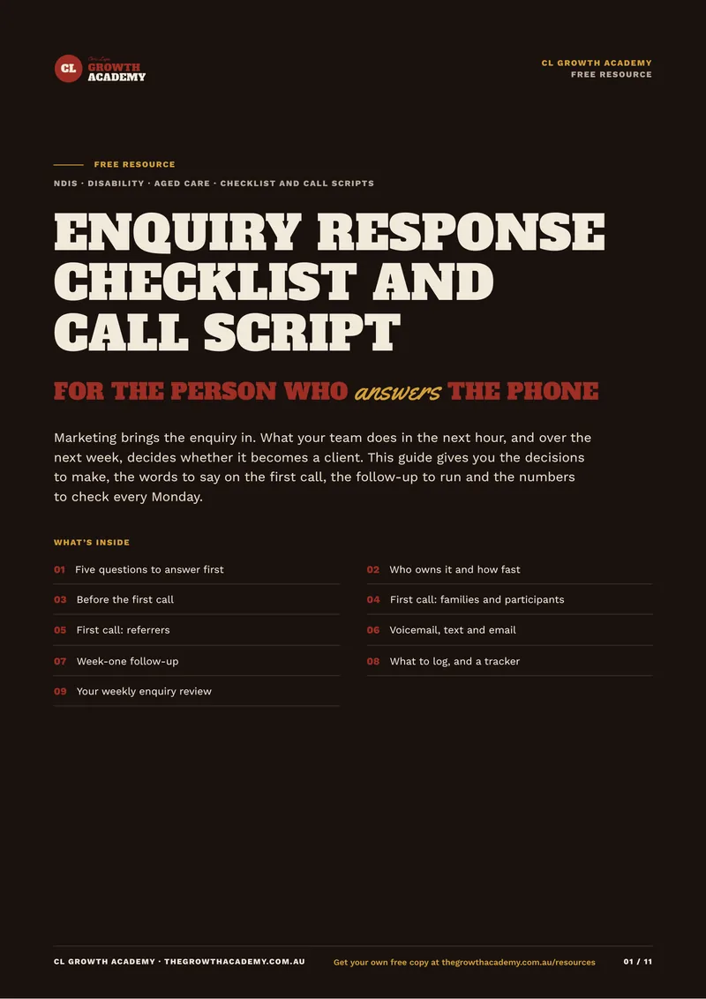

NDIS Enquiry Call Script and Follow-Up Checklist
The Enquiry Response Checklist and Call Script is a free guide for NDIS, disability and aged care providers on what happens after an enquiry lands: who owns it, how fast to call back, what to say to families and support coordinators, how to follow up across week one, and what to track.

What should happen when a new NDIS enquiry comes in?
Short answer: one named person owns it and calls back within the hour, and on the same day at the latest. If they can't call yet, someone texts within minutes to say when the call is coming. A family looking for support is often contacting two or three providers at once, and the one that responds first, clearly and warmly, usually wins.
Before any script, answer five questions as a team. Write the answers down and put a name next to each one.
| Question | What a good answer looks like |
|---|---|
| Who's in charge of the enquiries? | One name, plus a named back-up for leave and busy days |
| What's the sales process we follow? | Written steps from first call to signed service agreement |
| What's the system that tracks it? | A shared sheet or a CRM, with every enquiry logged the day it arrives |
| How many calls on day one? | A number the team agrees and can deliver every week |
| And across week one? | A set number of touches, changing channel when calls go unanswered |
What do you ask on the first call?
Ask about the person and their needs, never about their plan budget. The first call is a conversation: understand what matters to them, explain what you do in plain language, and book the next step before you hang up.
The guide has two scripts, one for families and participants and one for support coordinators, hospital discharge teams and allied health. A preview of the family questions:
- Tell me a bit about [person]. What's a normal day or week like at the moment?
- What made you reach out now?
- What support are you looking for, and what would good look like a few months from now?
- What matters most to [person] in who supports them?
- Who else should be part of this decision?
A support coordinator gets a shorter call: what support is needed and how often, the timeframe, whether the participant has agreed to the referral, and when you'll update them. Support coordinators often hold several referrals at once, so answer the capacity question straight away.
Treat everything you hear as health information. Ask before you take notes, collect only what you need, keep it in your tracker or CRM, and get permission before you share it with anyone. The Privacy Act covers a disability service provider that handles health information, even a small business.
What do you write back to an NDIS enquiry?
A short reply from a work email, with your name, your number and one clear ask. Here is the follow-up email from the guide, for when you couldn't reach someone by phone:
"Subject: Your enquiry about [service]
Hi [name], I tried to reach you by phone about your enquiry for [service]. I'd love to hear more about what you're looking for. You can call me on [number], reply to this email, or book a time here: [booking link]. [Your name], [role], [provider]"
If you have no capacity, say so early and say what happens next. To a family:
"I want to be upfront: we don't have a spot for [service] in [area] right now. I expect to know more by [date]. Can I call you then? If you need support sooner, [provider or option] may be able to help."
To a support coordinator:
"I don't want to hold this up: we can't take [participant] for [service] in [area] right now. I'll know more by [date]. Do you want me to keep it open until then, or are you better placed going elsewhere?"
A fast, honest no keeps a support coordinator referring to you. Log it as "no capacity" with a next contact date, then make that call on the day you promised. The guide has the voicemail, three texts and a last message before you close an enquiry.
How many times should you follow up an NDIS enquiry?
Agree the number as a team, then change the channel when calls go unanswered: a call, a voicemail and a text straight after, an email, then a text with two times you're free. After week one, keep going more gently. As I put it to one provider: "I would encourage a few more attempts. Even over a 30-day period, like call once a week."
Before you close an enquiry, look at every touch since it came in, send a last message, and record the reason. If the person agreed to hear from you, add them to your newsletter. People come back when the timing is right.
A preview of the text after a missed call:
"Hi [name], it's [your name] from [provider]. I just tried to call about your enquiry. When's a good time to chat? You can call me on [number] or reply with a time."
What should you track for every enquiry?
The date and time it arrived, who it is, what they need, where they found you, referral or direct, the owner, the first contact, every touch, the next contact date, the stage and the outcome. Every open enquiry needs an owner and a next contact date.
Then review it every Monday: enquiries by source, how many got a call within your standard, how many became a meeting or a signed client, why the closed ones closed, and your cost per enquiry against your cost per client. "If I'm a busy business owner, I want to know how much money I spent and how many inquiries I got." The tracker turns those two numbers into a third: what each new client costs.
If you want help setting this up with your team, see how I work on the NDIS sales and enquiry process.
What's in the full guide?
- Five questions to answer first, with a write-in table
- Who owns it and how fast: owner, back-up and response standard
- Before the first call: needs-based questions, consent and privacy
- First-call script for families and participants
- First-call script for support coordinators, hospital discharge teams and allied health
- Voicemail, text and email scripts
- Week-one follow-up table
- What to log, with a tracker you can copy into a sheet
- A Monday enquiry review checklist
How do I use it?
- Answer the five questions with everyone who answers the phone, in one sitting.
- Print the scripts and keep them by the phone. Say them in your own words.
- Copy the tracker columns into a shared sheet and log every enquiry from today.
- Run the review checklist every Monday, with the tracker open.
Who is it for?
Owners, enquiry and admin staff, coordinators and anyone who answers the phone at an NDIS, disability or aged care provider.
Get the Enquiry Response Checklist and Call Script free
You get the full 11-page PDF, plus every other resource in the library.
FAQ
Is this a sales script?
It's a guide for a conversation. The questions are about the person and what they need, and your team says them in their own words.
Can we ask about NDIS funding on the first call?
Never ask about plan budgets or funding amounts to decide whether someone is worth a call back. Talk about how a service would be funded only once you both know it fits, and only to explain the next steps. The NDIS Code of Conduct asks providers to act with integrity, honesty and transparency, and to respect the privacy of people with disability.
How quickly should an NDIS provider respond to an enquiry?
My standard is a call back within the hour, and on the same day at the latest. If your team can't promise that yet, agree the number you can guarantee today, write it down, and send a short text straight away when the owner can't call.
What if we have no capacity?
Say so early, give a date when you'll know more, and offer another option if they need support sooner. Log it with a next contact date and call back on the day you promised.
Do we need a CRM?
A shared sheet does the job for most providers. A CRM helps once the volume is there. The guide lists the fields to track either way.
Want help with your enquiry process?
Book a free growth audit and I'll look at how enquiries reach you and what happens after the phone rings, then pick the first three moves.
Sources
- What is a health service provider? (opens in a new tab), Office of the Australian Information Commissioner, checked 15 November 2026
- NDIS Code of Conduct (opens in a new tab), NDIS Quality and Safeguards Commission, checked 15 November 2026
The response standard, scripts, follow-up and tracker are CL Growth Academy's own.